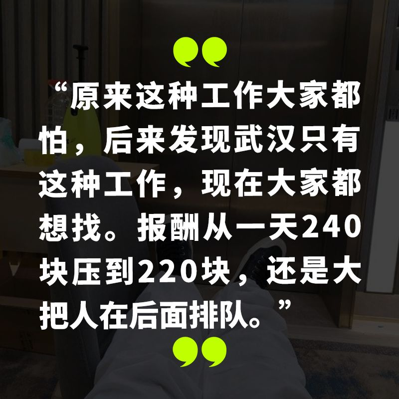
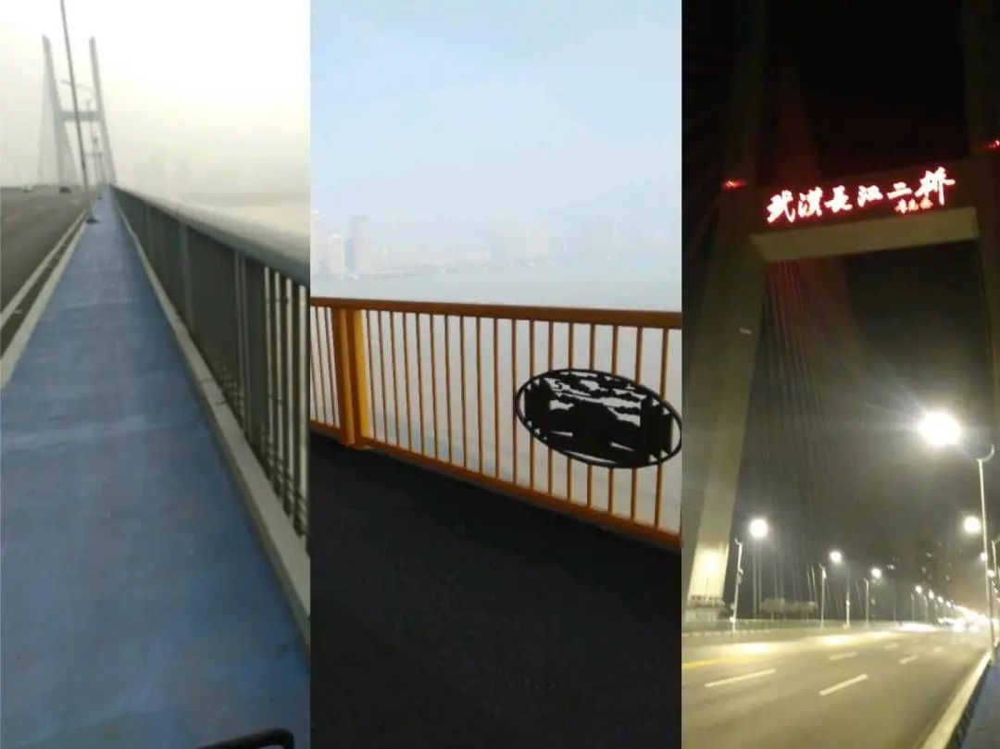
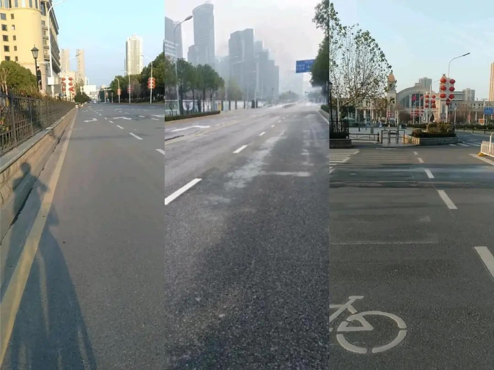
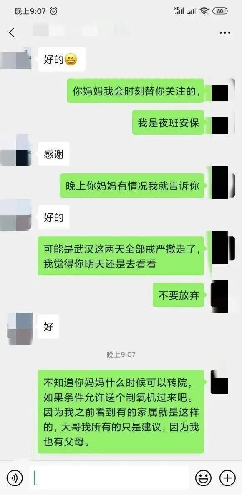
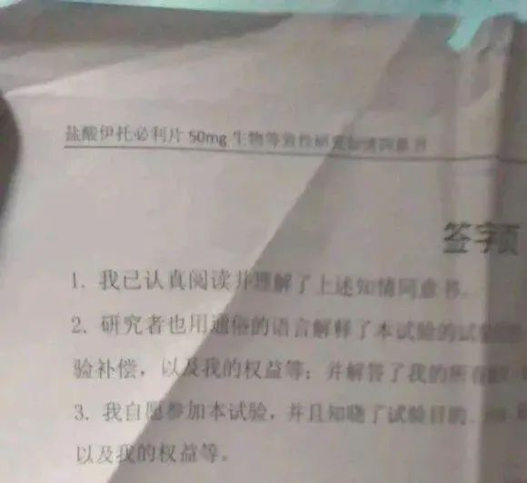

惊魂记：我疑似感染新冠肺炎的两周
原文链接 备份链接 我与男朋友异地恋，他在武汉，我在杭州。1 月初的时候，考虑到男朋友可能年后外派出国，我决定 1 月 10 号前往武汉和他过周末。 知道我的计划后，我的同事兼舍友小柔和曼曼发了我一条发现新冠病毒的新闻。但疫情的发展趋势并 …



27 岁的大白做隔离区的夜班安保已有一个多月了。他没想到的是，自去年十月底从宜昌监狱出狱后，这竟是他最稳定、长久的一份工作。
武汉封城后，各行业纷纷停摆。从周边城市来武汉的大白找不到工作，在汉阳区一张 25 元一天的床铺上一动不动地躺了四天，“没吃的，还欠了两天的房租，一些武汉网友知道之后，就说希望我能帮他们跑跑腿、拿拿快递什么的。”
再骑上共享单车，街上已空无一人，为了到达散布在这座巨大城市各处的网友家里，大白一直在穿过各种形态的大桥、来来回回地跨越雾气弥漫的江面，“二七桥、二桥、大桥、杨泗桥…加起来骑了起码有八百公里，最长的一次，一口气骑了三十多公里，那种感觉忘不掉。”

大白拍下的桥

空城武汉
一次帮网友跑腿，对方特地给他准备了一份盒饭，大白把盒饭给了一个在广场上的陌生人，“那人在那坐着锤凳子，四十岁左右，不像流浪汉，但能看出来已经几顿没吃了。”

网友给大白准备的盒饭
初五，大白得到了另一份工作：摆摊卖口罩。口罩很薄，几乎透明，“进价五块一袋，那人叫我卖二十，就在中百超市门口摆摊，这也太丢人了，还好大家都戴着口罩。”
有的武汉阿姨嘴快，拿起口罩看看，就说，小伙子你可真缺德，发国难财，“我说，这个也不是我卖的，是帮别人，她说，你这么好人？大冷天的帮别人卖？”
口罩的生意大白就干了一个下午，原因是他 “老瞎搞”。“一个老头，不会用支付宝微信，身上只有一张一百的、一张十块的，我也没钱找，怎么搞？就收个十块吧。人家那么老了，总不好意思不卖吧。” 晚上摊主回来，一点发现货少了，“他没说什么，给了我一百块钱，后来我也不敢去了，我怕警察，警察这俩字我都怕。”
卖口罩有风险，跑腿不稳定，直到有网友告诉大白，现在去当志愿者，挣钱多，还包吃住，大白被点醒，成了一名隔离区夜班安保。
2 月 8 号，大白通过中介来到江汉区一座被征用于隔离的党校，对方承诺 “每天两百四、一周一结、工作简单、可玩手机。” 这是一幢十层楼房，病人被安置在六楼到九楼，总共可容纳约 160 名病人。

隔离区的走廊
可能是因为刚被征用，房间里只有一张光秃秃的床，床单被套、卫生纸都没有配齐。刚来的老人，第一件事就是给自己铺床，大白在旁边看着，想到上班之前领导严肃强调过的话：很多事情你以为你是在做好人，万一你跟病人接触，一感染，要把大家全害掉了，千万别碰病人，也不要进病人的房间。
“看住病人别乱跑”，这本是大白清单上唯一一项任务。“开始，我是想着，干完我分内的活、拿钱、完事”，可后来大白发现，所谓的规定和职责范围更像是一条单方面的免责协议，现实情况的复杂和管理的混乱让界限不得不开始松动。
大白被告知，除了安保，隔离点还有负责收垃圾、打水、发饭、消毒的保洁岗位，“他们说安保坐在那里不动，看着病人就行了，可是我们从来没见过保洁。如果病人拜托你去打个水，你就能坐在那里一动不动吗？” 其次，24 小时值班的只有一名医生和一名护士，无法照顾到老年、糖尿病、无家属病人的需求。

大白跟病人家属的聊天
实际上，当班的第二天，大白就进了病人的房间。“我当时和另一份安保当班，送一个老大爷去房间，我跟他聊天，说现在党校条件不是很好，生活物资需要家里来送，大爷就很平淡地说，老伴已经因为这个病走掉了，儿子、儿媳都被隔离在别的地方，没有人管他。大爷问我们，能不能帮他铺一下床，我就进去帮他铺了。”
这样逾越规则的事情不止发生过一次：一位阿姨确诊了，但却没地方收治，社区让找医生，医生又说要社区出示证明才能来接人。阿姨在这个死循环里急的团团转，大白跟她商量好，带她下楼，自己跟前台谎称，病人太激动，一下没拦住她，“等于我俩排了一出戏，闹完第二天，这个阿姨就转移到医院了，她后来跟我讲，小伙子，要是我病好了，我一定得请你吃个饭。”
“还有一位糖尿病患者，他需要每天自己注射胰岛素，管我要酒精消毒。第一次，我跑了十几分钟跑上跑下才弄来半杯酒精，他又问我有没有棉签，肯定是没有的，第二天，我自己在外面买了给他。四五天之后，酒精用完了，他又问我要。我先是找医生要，医生让我找接待，接待说没有，医生又让我拿对讲机找指挥部，指挥部对我爱答不理，我实在忍不住，骂了几句，当天晚上，就有人找到我，说我这个性格不适合呆在这里。”
大白把这归咎于自己 “没上过什么班”，所以 “不知道什么话该讲不该讲，也不知道谁是领导，有时候脾气来了，更顾不了”。他以前靠着 “好到爆的人脉” 做生意，理解不了疫区这种上传下达、环环相扣的运作方式。按大白的说法，“他们说的那些规定（不能接触、不让进房间）当然有道理，你不能说他没道理，但你在那儿，看见那些老人，你没办法那么弄。”
时间拨回到去年十月底，那时，大白刚出狱，和妻子、女儿在常州生活，因为有案底，找不到长期工，靠着一天一百多的日结勉强养活三个人。今年元旦，一家人来到武汉谋生，但生活并没有改观，1 月 7 号，大白准备去武汉某医院应征临床志愿者，试用一种叫做 “盐酸伊托必利片” 的药，“要在医院住两三天，能挣六千块钱”。
那天的事，大白记得很清楚。他刚坐上了地铁，妻子就打来电话，说自己带不了孩子，大白中途回家一看，孩子在家，妻子已经离开了。“我知道她心里有怨气，我在监狱里的两年都是她一个人带孩子，出来之后，挣不到钱，一去打工，还是得她带孩子。”

没派上用场的试药知情书
1 月 10 号，大白把孩子送回老家给妈妈带，次日独自返回武汉打工，“我当时想着还有十多天过年，在武汉打打工，攒个两千块回去交差。”
大白不知道妻子这一走算不算跟他离婚了，因为他们还没结婚。女儿出生的那一年，大白刚到结婚法定年龄，97 年的妻子还没到，所以女儿一直是 “黑户”。他想赶紧弄好女儿的户口，办户口需要先做亲子鉴定，做亲子鉴定就需要两千块。
离开时家人嘱咐他，今年除夕一定回家过年 —— 大白已经三年没回家过年了。“主要是为了我爷爷，他因为我入狱这事儿受了点刺激，每次在路边走，看见车就要拦，说是要打车去监狱里看我”。
1 月 23 号，武汉封城，大白那天早上八点醒的，“看见凌晨政府发的通告，还有两个小时就封城”。他蹬了三个小时骑到光谷区的出城通道，看到人潮都在往回折返，道路几乎被堵死，一个信息传来：已经出不去了。

大白在党校隔离点干了一个星期就干不下去了，2 月 15 号，他换到了另一个隔离点，原是江汉区的一家四星酒店。入职当天，他接到第一个任务，去协和医院接做完核酸检测的病人。
大白回忆，那是他第一次体会到秩序。当时协和医院的人不多，一切井井有条，“隔离区划分出来了，方舱医院也建起了，人就不会一股脑儿地往医院跑了”。
相比党校，酒店的条件比较优越，每一户都可以自己烧热水、床单铺盖充足、病人有营养餐。四名安保被分成日间和夜间两个小组，共同负责一个楼层。大白和他的室友负责晚八点到早八点的夜间，换班时间可以彼此协调。唯一没有改观的，是安保们的防护服，“鞋套是家用的，防护服基本上属于透明的那种，大家都是从外包中介那里过来的，没有合同。”

大白的装备
前两天，大白觉得自己被感染了，他求助于在线问诊的医生：“感觉胸口有点难受，没有其他的症状了，但前几天有个老婆婆呼吸困难、走路困难，我扶她上的救护车”。
医生只能建议他 “联系医生做胸部 CT”，大白的顾虑则是：“万一做了没事，没地方报销”。过了几天大白告诉我，自己没得病，是天天戴着口罩，给戴缺氧了。
没事儿的时候，大白会想在老家的女儿，但关于女儿的记忆，大多只是自己曾经好境遇的一种佐证，“那时候花钱都不知道怎么个花法，买那种一支五六百的硅胶奶瓶，衣服买那种竹纤维套装，一套就一千块钱”。除此之外，他也承认自己 “爱玩，没怎么带过小孩”。
跟大白一起当志愿者的，大多都是没钱的、欠债的、外省被困的。尤其是到了现在这个阶段，武汉封城一个多月了，这场战役到了令人疲惫的中场，一些本就处于边缘的人们正面临着真正意义上的弹尽粮绝。
“原来这种志愿者工作大家都怕，后来发现武汉只有这种工作，现在大家都想找。” 大白能很敏锐地感受到这个供需关系发生颠倒的时间 —— 2 月 24 号，那天，中介在群里说，要把一天 240 元的报酬压到一天 220 元，“他直接讲白了，你要是不做你就走，大把的人在后面排队”。

工友们在群里对中介压价表示不满
没有医保，没有社保，大白这样的志愿者徘徊在被市场和中间商们操控着的地盘上。令人心有所感的是，大白曾经也是一名 “中间商”。他从需要用钱的人手中收购空白的银行卡，再以两倍的价格倒卖给福建的二道商人，银行卡最后流到东南亚赌场的中国客户手中，用以洗钱或赌博。最终，这份 “事业” 让大白因 “掩饰隐瞒非法犯罪所得” 入狱两年。
出狱的前一天晚上，大白发现电视剧里那种出狱前夜的激动 “太夸张了”，“我就觉得没有什么激动的，老婆接我出狱，一路上一句话都没得说”。再见到女儿，大白抱了她一下，“好像也说不上什么感觉”。封城时刻，大白的第一反应是 “没什么的，又不是要被枪毙”。对中介的压价，大白一开始很愤怒，再问时，他挺平淡地告诉我，缩水的工资已经拿了一个多星期了。
用大白的话总结：“再苦的事情当你面临的时候，它也没那么苦，再开心幸福的事儿你面临的时候，它也开心幸福不到哪里去”。
在酒店时，大白做了一个梦：警察找到他，说，不好意思，我们放错人了，你还得回去。“要么是自己还在里面，要么是又被带回去，经常做这种梦”。

大白在工作
在服刑时，大家一起生产一种电缆，每个人要学会扮演流水线上的一道工序，然后在余下的刑期里不停地重复、重复、重复。大白身处流程的末端，负责检查电缆的端面，“没坏的直接过，坏的挑出来”。光纤源源不断地涌过来，一天一万根，像另一种亟待收割的庄稼，大白觉得不错，视线被占有着、手能动着，没时间无聊，也让人感到安全。
“比看守所强多了，那里边三十个平方住 20 个人，找不到一块儿能盯着的空白，动不动就跟别人眼睛对上了，对得不爽，还得打一架。”
一点钟，要 “上大夜” 了，室友回房间交班，大白下到自己工作的楼层，在电梯口的折叠椅上坐下。他什么也不想，也不玩手机，就在那儿坐着，觉得眼前的事儿好像也没什么不一样，然后平静地，陷入空白的视野里。
// 编辑：Alexwood，刘阳子
在这次疫情中，你是否被迫改变了自己的生活习惯，你和周围的人产生了怎样新的关系，你获得了哪些观察和思考？如果你有想法想要分享，请发送电子邮件到 tougao@yishiyise.com，注明 “武汉呼叫”，我们的编辑看到后可能会与你联系。
2019 年年末的时候我们希望每个人都能在 2020 年更脚踏实地一点，而 2020 如此凶猛，当我们都困在这场灾难之中，每一个你身边的故事带来的感受或许都将指向我们的未来。


原文链接 备份链接 我与男朋友异地恋，他在武汉，我在杭州。1 月初的时候，考虑到男朋友可能年后外派出国，我决定 1 月 10 号前往武汉和他过周末。 知道我的计划后，我的同事兼舍友小柔和曼曼发了我一条发现新冠病毒的新闻。但疫情的发展趋势并 …
原文链接 备份链接 河北医科大学第二医院麻醉科ICU护士 朱君宇 澎湃新闻记者 吕新文 2月21日，第八批河北省援鄂医疗队 175人又踏上了征程，至此，河北省共派出了1036名医护人员驰援湖北。 新冠肺炎的爆发，让我们度过了一个百感交集 …
原文链接 备份链接 沈杰把为医务人员理发的短视频上传到社交网络，获得了两种意料之外的回应：一种说他“胆子大”，“这种时候还敢到医院去”，另外一种，则是更多医务人员请他帮忙。 对他而言，自己只是偶然接到了一个医生的电话，了解对方困境后没犹 …
原文链接 备份链接 医学史 今天你的行医故事，就是明天的医学史 按 除夕夜，上海首批136名医务人员组成的医疗队紧急驰援武汉。本文作者，上海仁济医院呼吸科主治医师查琼芳从1月24日起就进驻金银潭医院重症病房工作。在完成高强度、忙碌而艰苦的 …
原文链接 备份链接 1月21日下午，我们三人就住进了武汉金银潭的一家酒店，然后迅速开始了解情况。两位记者去华南海鲜市场摸情况，我一边做北京朝阳医院陶勇医生被伤事件的电话采访、赶微信稿，一边询问武汉的医生朋友。我们三人在酒店房间第一次碰面 …